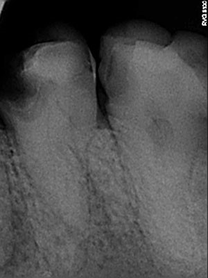
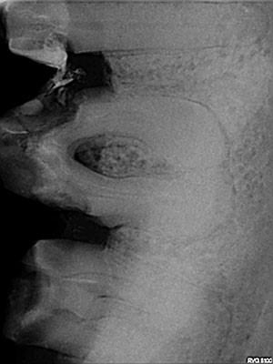
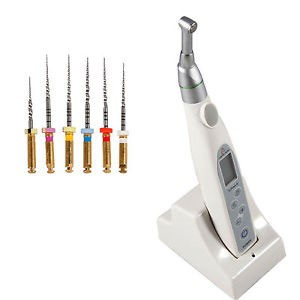
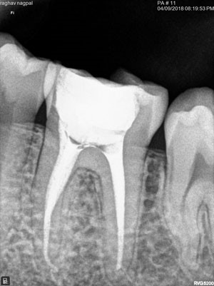
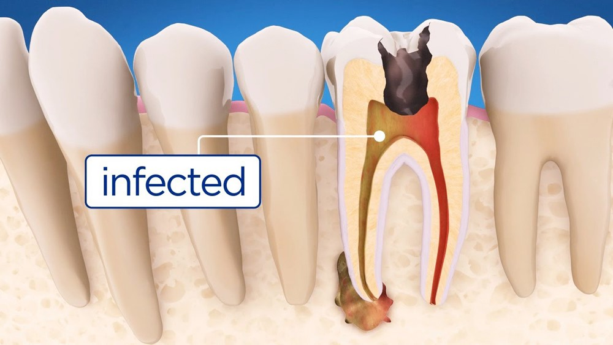

Decayed teeth with throbbing (or) intermittent pain in the tooth which radiates from tooth to jaws. Patients who complain of sensations while consuming hot or cold foods or drinks
Patients who have swelling around gums of particular teeth (sinus/fistula/endo-perio) are the indicated candidates for RCT & advised to undergo Root Canal Treatment.
- Non vital teeth
- Trauma to the teeth
- Avulsed teeth
Root Canal Treatment also known as RCT is one of the best ways to treat decayed teeth without pain. The main aim of the Root canal treatment is to remove the damaged pulp from the tooth and make sure that its infection free. Root canal treatment is effective for most of the patients, with its success rate of more than 98% and the best part is that the procedure is painless.



WHY IS RCT REQUIRED?
Root canal treatment is required in the cases when the infection occurred has spread to the deeper levels of a tooth. Degeneration of the pulp occurs once it attracts infection to it. Root canal treatment is most commonly advised immediately in case of the formation of abscess where the pus-pocket gets created at the end of the roots of the tooth. If the abscess is not treated on time with Root canal treatment, then it can lead to severe effects on the health of the jawbone of the respective person.
Full-arch rehabilitation with only four implants Two straight anterior implants and two implants tilted up to 45º in the posterior Immediate Function (fixed provisional bridge) For patients meeting criteria for immediate loading of implants
THE PROCEDURE OF ROOT CANAL TREATMENT:


Root canal treatment comprises of certain steps which are performed by an endodontist or an experienced general dentist. In the first step of Root canal treatment, the dentist creates a drill in the tooth, to access the infected pulp. Then, the infected pulp is removed from the tooth. After this, the dentist disinfects the root canal with saline and other medicinal solutions. This is followed by sealing of the root canals with biocompatible filling materials for preventing the occurrence of a similar infection soon. Once the filling material is placed, the crown is also placed and fixed over the tooth. The dental filling and crown help in protecting the tooth from any fractures.
What is Root Canal Treatment? And why PVR Dental Hospital is the best
When the tooth is attacked by bacteria from a cavity or from gum disease or a strong biting force, the affected nerve starts to deteriorate and may gradually become ‘non-vital ‘or die, and the tooth may experience pain or severe sensitivity to hot and cold food
As the infection progresses the bacteria that are now trapped inside the root start to multiply and release toxins and all of this starts up the process of inflammation or swelling. The tooth being a hard, closed structure, pressure is created, and severe tooth ache develops, and pain worsens when you lie down tooth pain radiates to head and ears, and after that it becomes swelling around tooth if untreated becomes external swelling.
At other times, a childhood injury to the tooth can slowly show symptoms several years later with a change in colour of the tooth with some accompanying discomfort.

- PVR dental hospital we do diagnosis & planning using with, in house diagnostic digital RVG (Gendex USA) X intraoral x ray, and advanced full mouth OPG digital imaging (Satelac Italy) and electronic pulp testing to differentiate root canal pain from gum problem or other problems.
- A local anaesthesia is given to numb the tooth and the entire nerve tissue is removed by Cleaning and shaping canals using mechanised root canal preparation with Rotary Endodontic for painless root canal preparation.
- Digital Root Length Measurement using Electronic Apex Locator and we use best available J MORITA
- We use advanced Endosonic techniques for complete removal of infection , we are one of the few dental clinics with advanced endosonic hand piece from Dentsply to reduce post rootcanal pain and sensitivity.
- The use of Mineral Trioxide Aggregate (MTA) as a retrograde filling material
- An inert material, the most common being guttapercha, a natural product, is used to hermetically seal the empty canal because it does not allow bacteria to grow.
- Microscopic Endodontics: Most revolutionary developments in the field of Endodontics, which provides extreme magnification identify and treat even minute structures. This makes it possible to do the best root canal treatment in Chennai. Thus pain can be minimized and excellent long-term results achieved.
CAD-CAM / LASER SINTERED Crowns (CAPS). root canal treated teeth require crown to avoid damage to the teeth, as tooth is destroyed by decay and root canal procedure removes some tooth structure which makes the teeth fragile and teeth has to be protected by crown to reduce breakage of tooth.
We have advanced lab set up with cad cam milling machine and laser sintered crown to give you best available treatment for you that’s why PVR Dental & invisalign centre is considered best root canal centre in Chennai.
What is the success rate of Root Canal Treatment?
Root Canal Therapy is a means of prolonging the life of the infected tooth and it avoids radical methods like extraction to remove infections. This is conservative modality of managing a root infection has helped save millions of teeth and preserve the natural dentition.
The success of Root Canal Therapy depends on a skilled dentist, excellent oral hygiene and a motivated patient. A review of multiple studies on the long term success rate of root canal treatment over 10 years is approximately 86-93%.
We practice the highest standards of asepsis and sterilization to ensure long term success of your root canal treated tooth.
The cost of root canal treatment in Chennai
The cost of root canal treatment is much less than the cost of dental implants, in Chennai most of the dentist charge around 3000 rupees to 5000 depends on their expertise and clinical set up and area of practice, crown charges depends on type of crown you choose we have wide variety crown from ceramic (porcelain fused to metal) cost around 4000 to 5000, advanced CAD-CAM process laser sintered crown cost is 5000 to 7000 and we have wide variety of advanced Zirconia(no metal) crowns processed by CAD CAM process will be around 8000 to 15000.
Root Canal Treatment Charges in Chennai
The average cost of root canal treatment in Chennai varies between Rs. 3000 to Rs. 4000 per tooth. The price depends on the type of treatment such as Anterior RCT, Posterior RCT single sitting RCT and Re-RCT. It’s done by the team of RCT specialist with latest technologies & high expertise.